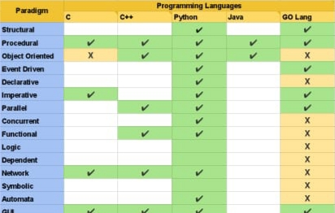

THIS WEBSITE HELPS US TO LEARN ABOUT THE 15 PARADIGMS IN ADVANCED PROGRAMMING PRACTICES.
15 Paradigms support on the top 5 programming languages

What is paradigm?
A philosophical and theoretical framework of a scientific school or discipline within which theories, laws, and generalizations and the experiments performed in support of them are formulated.
Paradigm can also be termed as method to solve some problem or do some task. Programming paradigm is an approach to solve problem using some programming language or also we can say it is a method to solve a problem using tools and techniques that are available to us following some approach. There are lots for programming language that are known but all of them need to follow some strategy when they are implemented and this methodology/strategy is paradigms. Apart from varieties of programming language there are lots of paradigms to fulfil each and every demand. They are discussed below:
Diffrent types of paradigms are-
StructuralProgramming with clean, goto-free, nested control structures.
Procedural Imperative programming with procedure calls.
object oriented Programming by defining objects that send messages to each other. Objects have their own internal (encapsulated) state and public interfaces.
Event Driven Programming with emitters and listeners of asynchronous actions.
Declarative Programming by specifying the result you want, not how to get it.
ImperativeProgramming with an explicit sequence of commands that update state.
ParallelParallel computing is a type of computation in which many calculations or the execution of processes are carried out simultaneously.
Concurrentis a form of computing in which several computations are executed concurrently—during overlapping time periods—instead of sequentially, with one completing before the next starts.
FunctionalProgramming with function calls that avoid any global state.
LogicProgramming by specifying a set of facts and rules. An engine infers the answers to questions.
Dependent It is an overlapping feature of type theory and type systems. In intuitionistic type theory, dependent types are used to encode logic's quantifiers like "for all" and "there exists".
NetworkProcedural programming is a programming paradigm, derived from structured programming, [citation needed] based on the concept of the procedure call.
SymbolicSymbolic programming is a programming style heavily based on manipulating symbols, where a symbol is an entity that has the property that if two symbols have the same representation, they are the same symbol.
AutomaticAutomata-based programming is a programming paradigm in which the program or part of it is thought of as a model of a finite-state machine (FSM) or any other (often more complicated) formal automaton (see automata theory).
GUIgee-you-eye[1][Note 1] or /ˈɡuːi/[2]) is a form of user interface that allows users to interact with electronic devices through graphical icons
For more info on paradigms ,please visit the following youtube channels